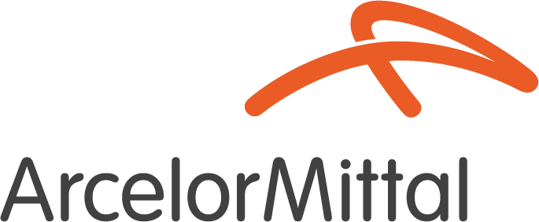

AEP
Avaliação Ergonômica Preliminar · Mina de Serra Azul
AEPs
Inventário
Plano de ação
Meu painel
Gerências
Organograma
COPSOQ por setor
Critérios do GRO
Taxonomia
Unidade
Sair
AEP · Mina de Serra Azul
Avaliação Ergonômica Preliminar
E-mail
Senha
Entrar